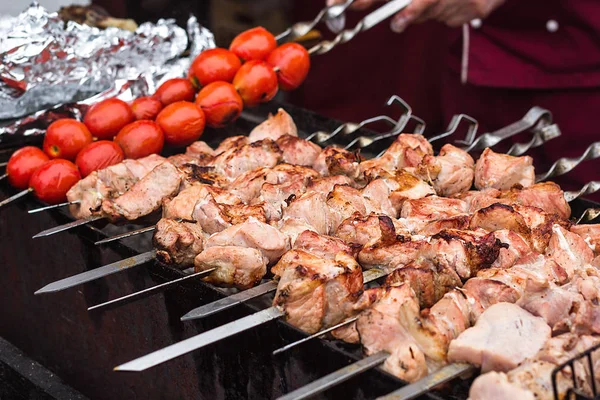

Shashlyk

Shashlyk is a dish of skewered and grilled cubes of meat, similar to or synonymous with shish kebab
Ingredients
- Fresh beef
- Central Asian shashlyk spices
- Onions
- Water
- Salt
Steps
- Cut beef into cubes
- Add spices, sliced oninos and water. Let it rest for a couple of hours
- Start the grill
- Skewer the beef cubes
- Cook for 5 minutes each